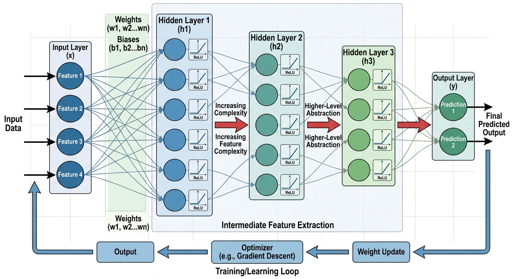
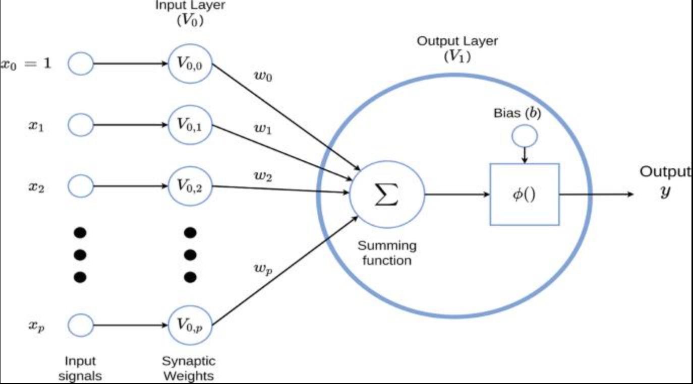
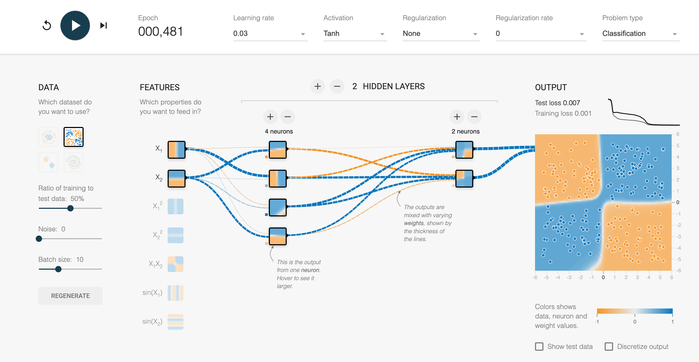
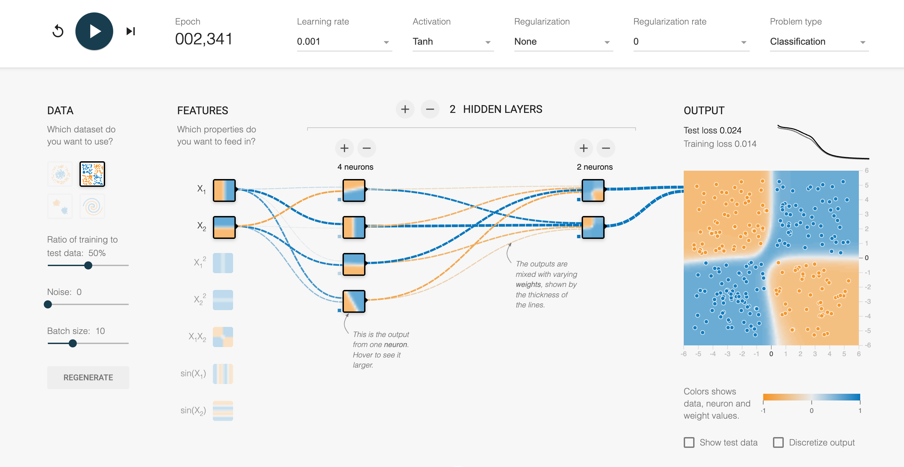
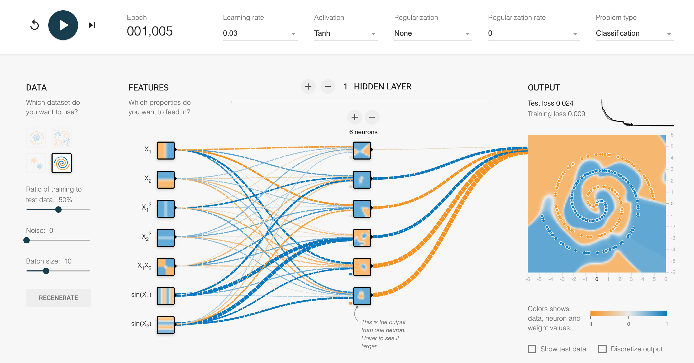

Exploring layers, neurons, activation functions, and AI learning through interactive visualization
Artificial Intelligence has transformed the way modern technology works. From voice assistants and recommendation systems to self-driving vehicles and generative AI, neural networks are at the center of many intelligent systems we use every day.
While neural networks are often explained using complex mathematics and programming concepts, visual tools can make them much easier to understand. To explore how neural networks learn and make predictions, I used the interactive tool TensorFlow Playground.
This hands-on experiment allowed me to visually train neural networks, adjust model settings, and observe how changes impacted performance, complexity, and accuracy in real time.
A neural network is a machine learning model inspired by the structure of the human brain. It consists of connected processing units called neurons that work together to identify patterns and make predictions from data.

Figure 1: Complete neural network architecture showing data flow from input through hidden layers to output

Figure 2: Detailed structure of a single artificial neuron
Data flows from the input layer through hidden layers before generating a final prediction at the output layer.
The TensorFlow Playground provides an interactive visualization of how neural networks learn from data. Using the playground, I experimented with different datasets, noise levels, hidden layer structures, number of neurons, learning rates, and activation functions.

Figure 3a: TensorFlow Playground - Experiment configuration with test loss 0.007

Figure 3b: Experiment with sin features and 4-2 network shape

Figure 3c: Experiment with 6-neuron hidden layer configuration
Experience neural networks in action with the TensorFlow Playground interactive tool.
🎮 Launch TensorFlow PlaygroundAdjust parameters, add layers, change activation functions, and watch the network learn in real-time.
In TensorFlow Playground, colors convey important information about the network's state:
Neurons are the individual processing units inside a neural network. Each neuron receives inputs, performs calculations, and passes outputs to the next layer. Neurons work collectively to learn patterns and relationships within data.
Weights determine the strength of connections between neurons. During training, important connections receive larger weights while less useful connections receive smaller weights. The network continuously adjusts these weights to reduce prediction errors and improve accuracy.
Activation functions decide whether a neuron should activate based on input values. They introduce non-linearity into the network, allowing neural networks to solve complex problems beyond simple linear relationships.
Neural networks improve through a process called optimization. Loss Functions measure how far the model's predictions are from correct answers (e.g., Mean Squared Error, Cross-Entropy Loss). Optimization Algorithms update weights to reduce loss (e.g., Gradient Descent, SGD, Adam Optimizer).
Adding hidden layers allowed the model to classify more complex datasets. However, deeper networks required longer training times.
Increasing noise made patterns harder to separate, reducing prediction accuracy. This demonstrated how important clean and structured data is in machine learning.
Increasing neuron counts improved classification ability but also increased computational complexity. Too many neurons can lead to overfitting.
Different activation functions produced noticeably different results. ReLU activation generally trained faster and performed better on many datasets.
One of the biggest takeaways from this project was the importance of visualization in understanding machine learning concepts.
Visualization transforms abstract AI concepts into practical learning experiences.
Neural networks are powerful tools that continue to shape the future of artificial intelligence. While the underlying mathematics can be complex, visual tools such as TensorFlow Playground make these concepts far more accessible and engaging.
Interactive experimentation not only improves technical understanding but also helps bridge the gap between theory and practical application in machine learning.